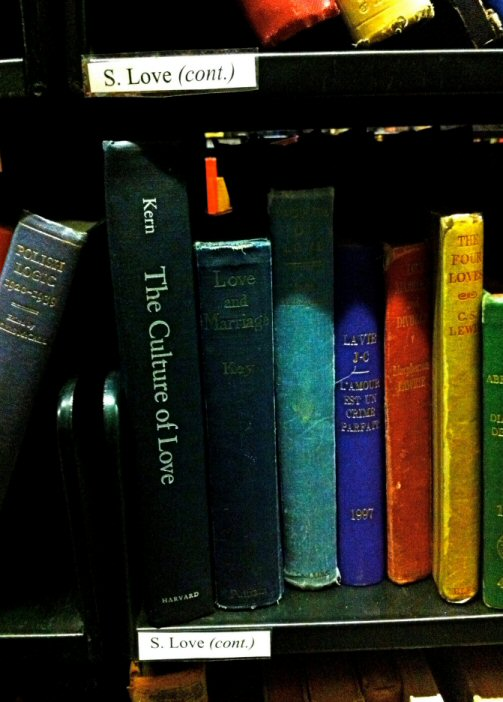

Thursday, February the 17th, 2011
back to: title, date or indexes
There used to be a library cataloguing methodology called the Dewey Decimal System, which could result in books with enormously long references: A.832.102.098/67 might be an example. Instead, every book fanatic knows that the quaint, humane system used in the London Library is much clearer: all the interesting stuff is in Science and Miscellaneous and arranged alphabetically. Fruit Farming follows Flagellation.
Thus Stephen Bayley, in the Telegraph, while bemoaning the decimalisation of our currency forty years ago. The London Library's idiosyncratic approach to cataloguing is indeed a thing of wonder, as the juxtaposition in this photograph shows.

Snapshot from the London Library's set for St Valentine's Day